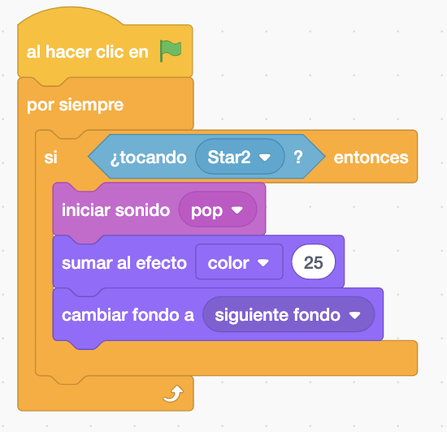
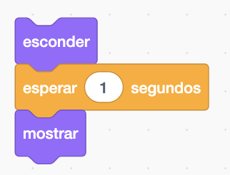

Nosotros hemos seleccionado la estrella y el sol de la biblioteca del Scratch pero si se quiere se puede seleccionar otros personajes.
Como mímino necesitamos dos escenarios de la biblioteca pero podemos tener más.

El juego consiste en que la estrella se moverá continuamente con una dirección dada al principio de forma aleatoria y si toca el sol cambiara al siguiente escenario.
La estrella la posicionamos en el centro. Y apuntaremos en una dirección aleatoria.

Se movera y si toca un borde rebotará.

El sol lo posicionaremos y lo moveremos con la flechas hacia la derecha, izquierda, arriba y abajo. También lo mostraremos por si estuviese escondida.

Si el sol toca a la estrella hara un cambio de escenario. También pondremos un sonido y cambiaremos de color al sol.

Si ejecutamos observamos que si se tocan hace un cambio de escenario continuamente. Asi que lo solucionaremos escondiendo el sol un poco y volviendo a mostrarlo al cabo de unos segundos para que a la estrella le de tiempo a pasar y asi no le tocará.

Podemos hacer una variable de Vidas para que cuando se toquen le quiten vidas al sol y que cuando llegue a 0 se acabe el juego poniendo un escenario de "Game Over" que hará el alumno.
Y el juego quedaría así.
Para ver el juego terminado pulsa
aquí.
Para descargarte el juego terminado pulsa
aquí.